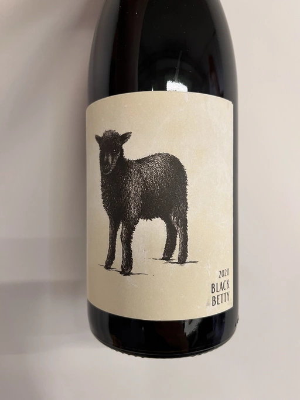

- Type
- Red Still, Dry
- Producer
- 2Naturkinder
- Vintage
- 2020
- Location
- Germany, Landwein Main
- Grapes
- Domina, Regent, Pinot Meunier
- Alcohol
- 11.5
- Sugar
- NA
- Price
- 695 UAH, 790 UAH
- Cellar
- N/A
Named after the first lamb born in the former 2Naturkinder Domina vineyard. According to the producer, 2020 was a terrible year due to the frost. Only a small amount of Domina survived, so they had to blend 57% of it with 42% of Regent (almost destroyed as well) and 1% of Pinot Meunier. Domina grapes were foot-crushed and left for one hour to macerate. Fermented and aged in old oak. Regent was fermented and aged in a stainless steel tank.
Ratings
2022-11-09 - 7.40
Black Betty is a wine named after the first lamb born in the former 2Naturkinder Domina vineyard. And here I am, drinking this blend of Domina, Regent and Pinot Meunier, trying to fight my confusion. On one side, I love this style of red wine you can accidentally call rosé. On the other hand, its freshness goes beyond my comprehension. It’s almost brutal, listen. It gives you those berries you crave, even pomegranate with red apple. It even has the right amount of VA to make things more sophisticated, especially in the aftertaste. But the acidity is crushing, and there is nothing to balance it.